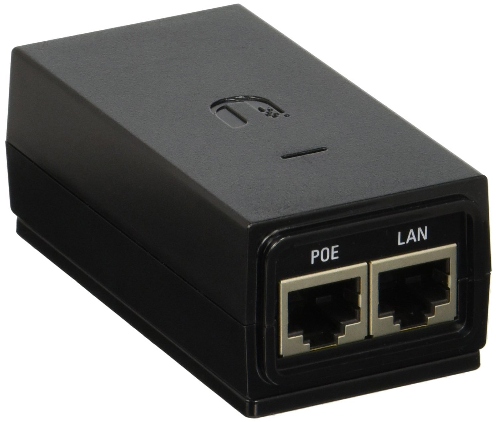

Controllerbasiertes WLAN @home
oder: Was tun, wenn das FritzBox WLAN nicht ausreicht
Sebastian Jürges - IT IS BSN
Über mich
Senior Network Engineer bei IT IS BSN
seit 2010 bei der BDr
Warum WLAN @home
BDr Netz hochspannend, aber ...
es ist vieles klassifiziert
ich will den Raum nicht ins Koma versetzen
Desweiteren:
WLAN die am meisten gestellte Frage
kompliziert, und doch so leicht
WLAN Basics
besteht aus einem oder mehreren Access Points (APs)
zumeist nur ein AP, im Provider Router integriert
z.B: Fritz!Box oder Speedport
begrenzte Reichweite
begrenzte Bandbreite
geteilter Frequenzbereich
WLAN Basics
2 Frequenzbänder: 2,4 & 5 GHz
2,4 GHz höhere Reichweite
5,0 GHz höhere Bandbreite
Mehrere Protokollversionen (z.B. a,b,g,n,ac)
Heute noch relevant (g,n,ac)
Controllerbasiertes- vs. Standalone-WLAN
Was ist Standalone
Ein "richtiger" AP
Ansonsten Repeater
Teilen sich Einstellungen (Kanal/Frequenz usw.)
Einschränkungen Standalone
Funktionert nur wenn sich AP und Repeater im Funk (OTA) mit guter Qualität sehen
Kein Roaming (wandern zwischen von unterschiedlichen Geräten mit Funk versorgten Bereichen)
reduzierte Bandbreite, denn:
Mehrfache Übertragung (Client->Repeater->AP)
Was ist Controllerbasiert
unabhängige APs
Von einer Zentralen Komponente (Controller) gesteuert
APs kennen Frequenzbereiche der anderen APs, können unterschiedlich konfiguriert sein
Vorteile Controllerbasiert
Roaming zwischen APs
Volle Bandbreite
Getrennte Frequenzkanäle möglich
Vorbedingung Controllerbasiert
Netzwerkkabel am AP Aufstellort
- ODER -
Controller-Mesh
Beispielproblem

Beispiellösung APs

Lösungskomponenten (Kabel vorhanden)
Controller
2 APs
~ 230€ (gesamt)
Beispiellösung Mesh

Lösungskomponenten (Keine Kabel)
Controller
3 Mesh APs
~ 350€ (gesamt)
Allgemeines zu APs
Zumeist Strom über Lankabel (PoE)
Fast niemand hat sowas zuhause
Daher: UniFi liefert Injectoren mit
Vielen Dank für die Aufmerksamkeit
Fragen ?